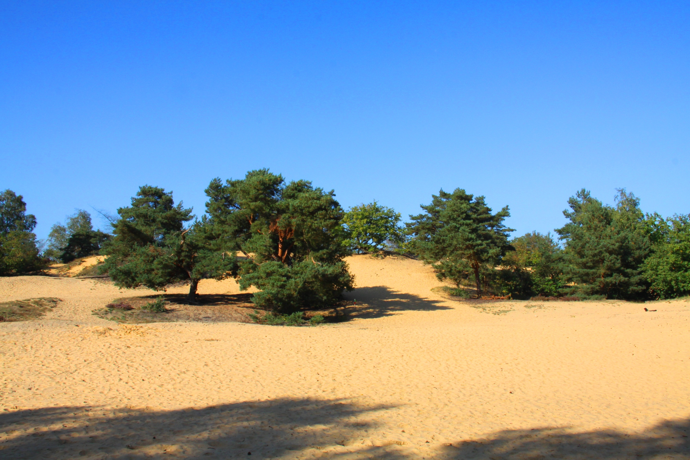
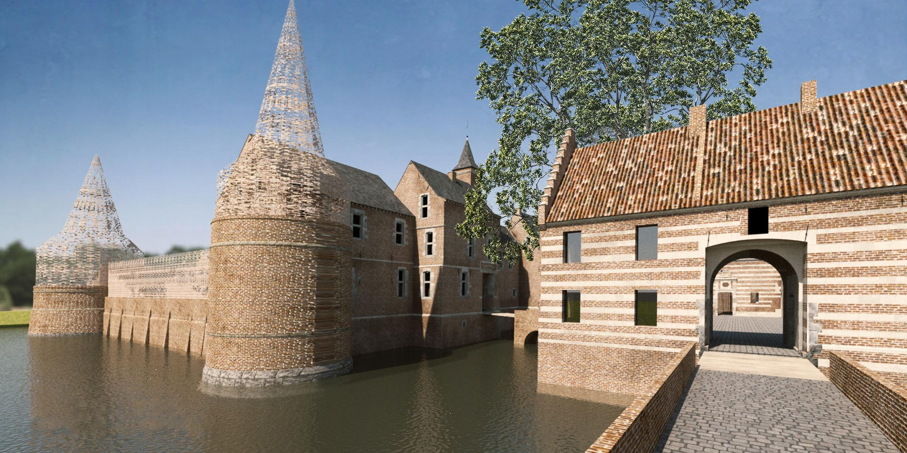

Wist-je-dat....
- De gemeente Oudsbergen sinds de fusie van 1 Jan 2019 bestaat uit de deelgemeenten Meeuwen-Gruitrode en Opglabbeek?
- De naam Oudsbergen komt van het natuurreservaat de Oudsberg dat er middenin ligt?
- De gemeente Oudsbergen al jaren op rij de snelst groeiende gemeente in Vlaanderen is?
- De gemeente Oudsbergen de Commanderij van Gruitrode weer in ere aan het herstellen is; en dat de naam Commanderij komt van de voormalige bewoners van het kasteel, de commandeurs van de (Duitse) Ridderorde?
- De gemeente Oudsbergen zeer bekend is om de ruitersport, haar fietsknooppuntenroutes en de vele uitgestrekte wandelgebieden?
De Oudsberg

De parel van Duinengordel is de Oudsberg: de hoogste en grootste open stuifduin van Vlaanderen. Ze steekt 85 m boven de zeespiegel uit. De Oudsberg is omringd door prachtige heideterreinen, statige bossen en vlinderrijke heischrale graslanden. Sinds 1998 is het erkend als Vlaams natuurreservaat. De Oudsberg maakt ook deel uit van een kandidatuur om erkend te worden als werelderfgoed op de UNESCO-lijst.
Op de top wacht een prachtig panorama je op. Het natuurreservaat onderging de laatste jaren een 'facelift' om de biodiversiteit te verhogen. Zo krijg je weer het zicht als vanouds: duinen met heide, veel zand, enkele boompartijen en dat alles omgeven door een bosgordel.
Wil je de Oudsberg ontdekken? Dit gaat te voet, te paard, per fiets of per mountainbike! Opgelet: de Oudsberg is niet met de auto te bereiken. De meest nabije parking vind je aan Camping Zavelbos. Via de bewegwijzerde paden maak je een wandeling van ongeveer 6 km heen en terug. Trek voor een bezoek dus zeker enkele uren uit.
Naast de landduin Oudsberg, verwijst de naam 'Oudsberg' ook naar een ruimer deelgebied waar je over bewegwijzerde routes kunt wandelen, paardrijden en mountainbiken. Enkele wandelroutes leiden je over de Oudsberg. Voor de ruiters is er een unieke ruiterlus die je naar de voet van de Oudsberg voert.
De Commanderij van Gruitrode

In 2012 werd het kasteel van Gruitrode door de eigenaren, de familie Van Megchelen, voor 99 jaar in erfpacht geschonken aan de gemeente Meeuwen-Gruitrode (na de fusie behorend tot de gemeente Oudsbergen). Sinds 2015 is het kasteel, en sinds 2016 ook de beschermde kasteelhoeve, van Gruitrode, eigendom van de gemeente met een plan voor ogen: het rijke verleden van de Commanderij opnieuw tot leven wekken en er een ontmoetingsplek creëren voor inwoners, verenigingen, bezoekers en ondernemers.
Hoewel het complex doorheen de jaren vervallen raakte, vormt de site nog steeds waardevol onroerend erfgoed. Vanaf 2017 werd de commanderijsite opnieuw zachtjes adem ingeblazen. In de eerste fase van het ambitieuze masterplan staan de renovatie van de kasteelhoeve en de kasteeltuin centraal. De gemeente wil het renovatieproject graag in 2024 gerealiseerd zien.
Via de volgende link kunt u een gedetailleerde beschrijving van de roemruchte geschiedenis van de Commanderij van Gruitrode bekijken.
Geschiedenis Commanderij van Gruitrode